When Do Learning Curves Follow Power Laws?
28 min main article; 8 min optional details
Paper (arXiv) · Code (GitHub) · 中文版
We show a sufficient and necessary condition of scaling laws (partially), point out that the scaling laws can be controlled by the intrinsic time and the ratio between the batch size and learning rate, and validate a successful prediction on 300M nano-GPT training. It can be a good example of how a simple model sparks LLM pre-training.
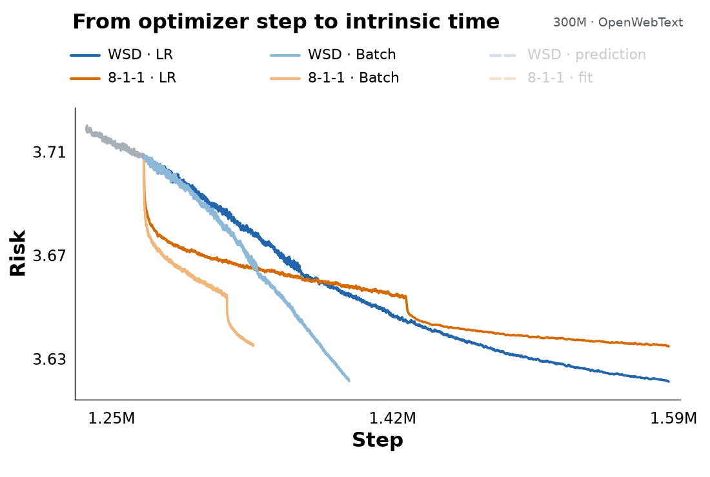
Scaling laws describe how language-model loss changes with model size, training data, and compute. In many experiments, these relationships are well approximated by power laws. They help us estimate the gains from scaling up and choose a model size and token budget within a fixed compute budget.
At a fixed compute budget, a larger model leaves fewer tokens for training. Chinchilla (Hoffmann et al. (2022)) captures this trade-off by fitting a power-law scaling law for the final loss of a model with \(N\) parameters trained on \(D\) tokens:
\[L(N,D)\approx L_\infty+\frac{A_N}{N^\alpha}+\frac{A_D}{D^\beta}.\]Here \(L_\infty\) is the fitted loss floor. The two excess-loss terms decay as power laws: \(N^{-\alpha}\) in model size and \(D^{-\beta}\) in training tokens, with fitted amplitudes \(A_N,A_D\) and exponents \(\alpha,\beta\).
Extending a fitted curve beyond the observed range is easy; knowing when to trust it is harder. Models, data, and training recipes can all change these relationships.
In the synthetic regression experiment of Qiu et al. (2024), MLPs learning a target with an exponential frequency distribution produce a compute–loss frontier that is not well described by a power law. The training recipe matters too. In the language-model experiments of Porian et al. (2024), a power law extrapolates well under a tuned recipe, but poorly under other recipes.


To understand when these frontiers follow power laws—and when they do not—we first need to understand the individual training curves that make them up: with model and data fixed, when does loss decay as a power law, and how does training change that law?
Within a given training phase, a model’s loss can be fitted as
\[L(t)\approx a\,t^{-p},\]where \(t\) counts training steps, \(a\) is the fitted amplitude, and \(p\) is the phase’s decay exponent. To see how training affects \(p\), compare runs with different learning-rate schedules.
Mircea et al. (2025) compared separate runs with the same architecture, data, and other settings: one used warmup followed by a constant learning rate; the other used warmup followed by cosine decay.
Compare the 144M model across the two panels: cosine decay raises its fitted late-training exponent from 0.023 to 0.036. The fitted slope depends on the training schedule, not just the model and dataset.
These examples connect several questions: when loss follows a power law, why power laws arise (Liu and Gore (2026)), and how data and task structure interact with the training schedule to determine the exponent (Maloney et al. (2022)). To answer them, we start with the updates of stochastic gradient descent (SGD).
1. Where power-law decay comes from
How SGD noise affects later loss
SGD estimates gradients with minibatches. Compared with full-gradient updates, sampling error randomly perturbs the parameters. Later updates continue from those changed parameters, so a perturbation can affect loss for many steps.
For a model \(f_\theta\) with training objective \(\mathcal L\), let \(\eta_t\) be the learning rate, \(B_t\) the batch size, and \(\xi_t\) the minibatch-gradient error. With fresh i.i.d. examples, SGD takes the form
\[\theta_{t+1} =\theta_t-\eta_t\nabla\mathcal L(\theta_t)-\eta_t\xi_t, \qquad \mathbb E_t[\xi_t]=0, \qquad \operatorname{Cov}_t(\xi_t)=\frac{\Sigma(\theta_t)}{B_t}.\]Here expectations are conditional on the training history, and \(\Sigma\) is the single-example gradient covariance. The parameter perturbation \(-\eta_t\xi_t\) therefore has variance scale \(\eta_t^2/B_t\): a smaller learning rate or a larger batch reduces its size. What matters for a later loss is how subsequent updates propagate that perturbation.
A small-noise expansion lets us add up these effects. Write \(F(n)\) for the noise-free validation loss and \(K(n,s)\) for the response at update \(n\) to noise injected at update \(s\):
\[\mathbb E L_{\mathrm{val}}(\theta_n) \approx \underbrace{F(n)}_{\text{baseline learning}} +\sum_{s<n} \underbrace{\frac{\eta_s^2}{B_s}}_{\text{injected variance scale}} \underbrace{K(n,s)}_{\text{effect on the final loss}}.\]The first term follows full-gradient updates from the same initialization and with the same learning-rate schedule; the sum collects the effects of minibatch noise. This is the starting point of the forcing–memory decomposition.
Derivation: how SGD noise affects later loss
Fix a horizon \(n\), an initialization \(\theta_0\), and deterministic schedules \((\eta_t,B_t)\). Let \(\theta_t\in\mathbb R^p\) be the parameters before update \(t\). Each update uses fresh i.i.d. examples from the same data distribution. Assume the smoothness and moment bounds required by the expansions below.
1. The size of the sampling noise. For the model \(f_\theta\) and per-example loss \(\ell(f_\theta;z)\), write \(\mathcal L(\theta)=\mathbb E_z[\ell(f_\theta;z)]\) and \(g(\theta;z)=\nabla_\theta\ell(f_\theta;z)\). At update \(t\), let \(z_{t,i}\) be the \(i\)-th example in the batch. The minibatch gradient \(\widehat g_t\) and its sampling error \(\xi_t\) are
\[\widehat g_t=\frac1{B_t}\sum_{i=1}^{B_t}g(\theta_t;z_{t,i}), \qquad \xi_t=\widehat g_t-\nabla\mathcal L(\theta_t).\]Let \(\mathbb E_t\) denote expectation conditional on the training history, and \(\mathbb E\) expectation over all batches. Define the single-example gradient covariance \(\Sigma(\theta)=\operatorname{Cov}_z(g(\theta;z))\). Conditional independence of the examples gives
\[\mathbb E_t[\xi_t]=0, \qquad \mathbb E_t[\xi_t\xi_t^{\!\top}] =\frac1{B_t^2}\sum_{i=1}^{B_t}\Sigma(\theta_t) =\frac{\Sigma(\theta_t)}{B_t}.\]The parameter perturbation is \(h_t=-\eta_t\xi_t\), so \(\mathbb E_t\lVert h_t\rVert^2=\eta_t^2\operatorname{Tr}\Sigma(\theta_t)/B_t\). This separates the schedule-dependent variance scale, \(\eta_t^2/B_t\), from the state-dependent gradient covariance.
2. How one perturbation travels through later updates. Define the full-gradient update map \(D_t\) and its reference trajectory \(\bar\theta_t\):
\[D_t(\theta)=\theta-\eta_t\nabla\mathcal L(\theta), \qquad \bar\theta_{t+1}=D_t(\bar\theta_t), \qquad \bar\theta_0=\theta_0.\]Inject \(h_s=-\eta_s\xi_s\) at a single update \(s\), using full-gradient updates otherwise. Let \(\delta_t^{(s)}\) be the displacement from \(\bar\theta_t\). With a locally Lipschitz Hessian, subtracting the two updates and expanding for \(t\ge s+1\) gives
\[\begin{aligned} \delta_{t+1}^{(s)} &=D_t(\bar\theta_t+\delta_t^{(s)})-D_t(\bar\theta_t)\\ &=\left[I-\eta_t\nabla^2\mathcal L(\bar\theta_t)\right]\delta_t^{(s)} +O\!\left(\eta_t\|\delta_t^{(s)}\|^2\right). \end{aligned}\]Starting from \(\delta_{s+1}^{(s)}=-\eta_s\xi_s\) and retaining the linear term gives
\[\delta_n^{(s)}\approx-\eta_s A_{n-1}\cdots A_{s+1}\xi_s, \qquad A_t=I-\eta_t\nabla^2\mathcal L(\bar\theta_t).\]Here \(A_t\) is the update Jacobian along the reference trajectory. The product describes how later updates reshape the original perturbation; the empty product is \(I\).
3. How the perturbation changes the final loss. Let \(L_{\mathrm{val}}\) be the validation loss. Define \(G_{n,s}(\theta)\) as the final validation loss obtained by starting from \(\theta\) at update \(s\) and following the remaining full-gradient updates:
\[G_{n,s}(\theta) =L_{\mathrm{val}}\!\left((D_{n-1}\circ\cdots\circ D_s)(\theta)\right), \qquad G_{n,n}(\theta)=L_{\mathrm{val}}(\theta).\]By construction, \(G_{n,s}=G_{n,s+1}\circ D_s\).
Write \(\Psi=D_{n-1}\circ\cdots\circ D_{s+1}\) for the map from parameters after update \(s\) to final parameters, with coordinates \(\Psi_i\). Then \(G_{n,s+1}=L_{\mathrm{val}}\circ\Psi\), and the second-order chain rule gives
\[\begin{aligned} \nabla^2G_{n,s+1}(\theta) ={}&\left[\frac{\partial\Psi}{\partial\theta}(\theta)\right]^{\!\top} \nabla^2L_{\mathrm{val}}(\Psi(\theta))\,\frac{\partial\Psi}{\partial\theta}(\theta)\\ &+\sum_{i=1}^{p} \partial_i L_{\mathrm{val}}(\Psi(\theta))\,\nabla^2\Psi_i(\theta). \end{aligned}\]At \(\bar\theta_{s+1}\), the remaining updates end at \(\bar\theta_n\), and \(\frac{\partial\Psi}{\partial\theta}\) equals \(A_{n-1}\cdots A_{s+1}\). Substituting gives
\[\begin{aligned} \nabla^2G_{n,s+1}(\bar\theta_{s+1}) ={}&(A_{n-1}\cdots A_{s+1})^{\!\top} \nabla^2L_{\mathrm{val}}(\bar\theta_n) (A_{n-1}\cdots A_{s+1})\\ &+\sum_{i=1}^{p} \partial_i L_{\mathrm{val}}(\bar\theta_n)\,\nabla^2\Psi_i(\bar\theta_{s+1}). \end{aligned}\]The propagation matrices thus enter the curvature of the future loss. The first term measures how loss responds to the spread in final parameters. The second captures the shift in their mean caused by nonlinear updates: a mean-zero perturbation need not remain mean-zero after nonlinear propagation. Both contribute at second order, so both must be retained.
Return to the actual SGD trajectory and define \(\theta_s^+=D_s(\theta_s)\), the state after the full-gradient part of update \(s\). Since \(\theta_{s+1}=\theta_s^+ +h_s\), a conditional Taylor expansion gives
\[\begin{aligned} &\mathbb E_s\!\left[G_{n,s+1}(\theta_s^+ +h_s)-G_{n,s+1}(\theta_s^+)\right]\\ &\quad=\frac12\mathbb E_s\!\left[ h_s^{\!\top}\nabla^2G_{n,s+1}(\theta_s^+)h_s\right] +O\!\left(\eta_s^3\mathbb E_s\|\xi_s\|^3\right)\\ &\quad=\frac{\eta_s^2}{2B_s}\operatorname{Tr}\!\left[ \Sigma(\theta_s)\nabla^2G_{n,s+1}(\theta_s^+) \right] +O\!\left(\eta_s^3\mathbb E_s\|\xi_s\|^3\right). \end{aligned}\]The linear term vanishes because \(\mathbb E_s[h_s]=0\), and the second equality uses \(\mathbb E_s[h_sh_s^{\top}]=\eta_s^2\Sigma(\theta_s)/B_s\). The higher-order remainder is controlled by third derivatives of the future loss along the segment from \(\theta_s^+\) to \(\theta_s^+ +h_s\).
4. Adding the effects of all updates. A telescoping sum cancels the intermediate future-loss values, leaving the difference between the final SGD loss and the noise-free baseline:
\[\begin{aligned} L_{\mathrm{val}}(\theta_n)-G_{n,0}(\theta_0) &=\sum_{s<n}\left[G_{n,s+1}(\theta_{s+1})-G_{n,s}(\theta_s)\right]\\ &=\sum_{s<n}\left[ G_{n,s+1}(\theta_s^+ +h_s)-G_{n,s+1}(\theta_s^+) \right]. \end{aligned}\]Taking expectations, define the noise-free baseline \(F(n)=G_{n,0}(\theta_0)\) and the response coefficient
\[K(n,s) :=\frac12\mathbb E\!\left[ \operatorname{Tr}\!\left( \Sigma(\theta_s)\nabla^2G_{n,s+1}(D_s(\theta_s)) \right)\right].\]Let \(\mathcal E_n\) collect the expected higher-order remainders over all updates. Inserting the expansion from step 3 gives
\[\mathbb E L_{\mathrm{val}}(\theta_n) =F(n) +\sum_{s<n}\frac{\eta_s^2}{B_s}K(n,s) +\mathcal E_n.\]Earlier noise has not been removed from this calculation: \(\theta_s\) already depends on all preceding batches. The average defining \(K(n,s)\) therefore includes how earlier noise changes the state reached at update \(s\).
5. The error left by the approximation. Let \(M_{n,s}\) uniformly bound \(|\nabla^3G_{n,s+1}|\) along the Taylor segments, over the sampled histories under consideration. Then
\[|\mathcal E_n| \le\frac16\sum_{s<n} M_{n,s}\eta_s^3\mathbb E\|\xi_s\|^3.\]Omitting \(\mathcal E_n\) gives the response approximation in the main text. At fixed horizon, scaling the sampling noise by \(\epsilon\) makes the retained contribution quadratic in \(\epsilon\) to leading order, while the remainder is \(O(\epsilon^3)\), under uniform derivative and third-moment bounds.
The calculation tells us what \(K(n,s)\) measures: how noise added at update \(s\) affects loss at update \(n\), including the effects of the states reached during training. Describing how that response changes over time by a power law with a positive decay exponent requires further modeling. The next sections explain how the spectral model produces such a law and how the LLM experiments test whether it predicts loss under a new schedule.
In our Gaussian random feature model, the features are fixed, the output weights are trainable, and the loss is squared error. SGD’s expected squared prediction error relative to the noise-free target, \(R_t\), obeys the exact recurrence
\[R_t=F_t+\sum_{s<t}K_{t,s}\bigl(R_s+\sigma^2\bigr).\]\(F_t\) describes how the initial error propagates, while the history sum describes the accumulated effects of training noise. The remaining prediction error \(R_s\) at step \(s\) and the label-noise variance \(\sigma^2\) both contribute to the noise, and \(K_{t,s}\) describes its effect on loss at step \(t\).
Bias–variance gives another grouping of the same dynamics. Consider a target the model can represent, and assume label noise is independent of the input and has mean zero. Following the decomposition by error source in Zou et al. (2021), write \(B_t\) for the error from clean-label SGD and \(V_t\) for the error driven by label noise from zero initial error. Only in this comparison, \(B_t\) denotes bias rather than batch size. At every step,
\[\begin{aligned} R_t &=\underbrace{F_t+\sum_{s<t}K_{t,s}B_s}_{\text{source bias }B_t} +\underbrace{\sum_{s<t}K_{t,s}(V_s+\sigma^2)}_{\text{source variance }V_t}\\[6pt] &=\underbrace{F_t}_{\text{forcing}} +\underbrace{\sum_{s<t}K_{t,s}(B_s+V_s+\sigma^2)}_{\text{memory}}. \end{aligned}\]The first line separates error sources: the initial error and its sampling effects, or label noise and its subsequent effects. The second separates forcing from the accumulated effects of history. In particular, \(\sum_{s<t}K_{t,s}B_s\) belongs to bias in the first line and memory in the second. Clean labels make \(V_t=0\), but do not remove this part of the memory term. The two decompositions group the same effects differently; memory is not the same as label-noise variance.
Derivation: relating bias–variance to forcing–memory
Use the Gaussian random feature model, realizable target, and label-noise assumptions from the main text, fixing the features, input distribution, and predetermined learning-rate and batch-size schedules. Here \(K_{t,s}\) does not depend on the initial error or label-noise variance, so the following two processes use the same kernel.
1. Remove label noise and retain minibatch sampling. Keep the original initialization and set \(\sigma^2=0\). The Volterra equation gives the error of clean-label SGD:
\[B_t=F_t+\sum_{s<t}K_{t,s}B_s.\]Source bias therefore includes the sampling effects of clean-label training as well as \(F_t\).
2. Remove the initial error and retain label noise. Starting from zero initial prediction error makes the forcing term zero, giving
\[V_t=\sum_{s<t}K_{t,s}(V_s+\sigma^2).\]Zero initial error means that the model already makes the correct noise-free predictions at the start of training; it does not mean initializing the parameters to zero. This process isolates label noise and its subsequent effects.
3. Add the two recurrences. This gives
\[B_t+V_t =F_t+\sum_{s<t}K_{t,s}(B_s+V_s+\sigma^2).\]This is the same recurrence as for \(R_t\). Since \(B_0=R_0\), \(V_0=0\), and each step depends only on earlier times, induction gives \(R_t=B_t+V_t\). Substituting the expression for \(B_t\) yields the two groupings in the main text.
These decompositions identify the effects that contribute to loss, but do not yet explain how they decay over time. To understand where power laws come from, we need to look at how quickly error fades in each direction.
How curvature sets error-decay rates
Continue with the model \(f_a(x)=a^\top\phi(x)\), with fixed features \(\phi\) and trainable weights \(a\). We can explicitly calculate how quickly errors fade in each direction, as in the compute-optimal scaling analysis of Paquette et al. (2024).
These differences in speed are visible in the loss landscape: its curvature can vary across Hessian eigenvector directions. The left panel below sketches a quadratic loss, with a steep blue direction and a flatter orange direction.

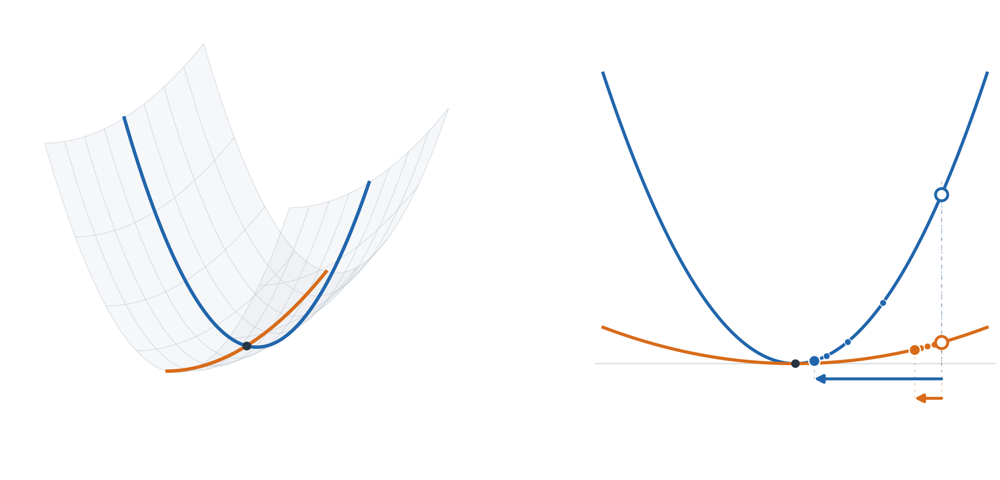
The right panel places both cross-sections on the same axes: parameter error horizontally and the direction’s contribution to loss vertically. The two open circles mark initial parameter errors of the same size. After four full-gradient updates at the same learning rate, the error in the blue direction has shrunk substantially, while the error in the orange direction has fallen only slightly.
To see why, write the parameter error in direction \(j\) as \(\rho_j\) and its Hessian eigenvalue as \(\lambda_j\). Its loss contribution is \(\frac12\lambda_j\rho_j^2\), and its gradient component is \(\lambda_j\rho_j\). For the same parameter error, a larger positive eigenvalue means a steeper landscape and a larger gradient. At the same sufficiently small learning rate, each update therefore removes a larger fraction of the error. We call directions where errors fade quickly “fast directions,” and those where errors fade slowly “slow directions.”
Let \(\rho_{j,t}\) denote the parameter error in this direction at step \(t\). Repeated full-gradient updates give, under the small-step approximation,
\[\rho_{j,t}\approx\rho_{j,0}e^{-\lambda_jT_t}, \qquad T_t=\sum_{s<t}\eta_s.\]The clock \(T_t\) is intrinsic time. Reducing a direction’s error by a fixed factor takes intrinsic time proportional to \(1/\lambda_j\).
Loss adds up weighted squared errors across directions. A slow direction contributes little if there was almost no error there to begin with. Learning speed and importance to the loss are different things.
Derivation: how curvature sets error-decay rates
1. From squared loss to the gradient. Let \(\phi(x)\) be the fixed feature vector for input \(x\), \(y\) its target, and \(a\) the trainable weights. Define the population squared loss and its Hessian:
\[\mathcal L(a)=\frac12\mathbb E\!\left[(a^\top\phi(x)-y)^2\right], \qquad H=\mathbb E[\phi(x)\phi(x)^\top].\]For a minimizer \(a_\star\), the condition \(\nabla\mathcal L(a_\star)=0\) gives \(\mathbb E[\phi(x)y]=Ha_\star\). Hence
\[\nabla\mathcal L(a) =\mathbb E\!\left[\phi(x)(a^\top\phi(x)-y)\right] =H(a-a_\star).\]The gradient is the remaining parameter error transformed by \(H\). This identity is exact for squared loss with fixed features.
2. From the gradient to error dynamics. First consider full-gradient training, without batch-sampling noise. With learning rate \(\eta_t\) and parameter error \(e_t=a_t-a_\star\), the update becomes
\[\begin{aligned} a_{t+1}&=a_t-\eta_t\nabla\mathcal L(a_t),\\ e_{t+1}&=e_t-\eta_tHe_t=(I-\eta_tH)e_t. \end{aligned}\]Let \((\lambda_j,u_j)\) be an orthonormal eigensystem of the symmetric matrix \(H\), and define \(\rho_{j,t}=u_j^\top e_t\). Projecting the update onto \(u_j\) gives
\[\begin{aligned} \rho_{j,t+1} &=u_j^\top(I-\eta_tH)e_t\\ &=(1-\eta_t\lambda_j)\rho_{j,t}, \qquad Hu_j=\lambda_j u_j. \end{aligned}\]Along direction \(u_j\), the gradient is \(\lambda_j\) times the remaining error. In the small-step regime, one update therefore removes a fraction \(\eta_t\lambda_j\) of that error.
3. From the recurrence to a learning time scale. Iterating from the initial error \(\rho_{j,0}\) gives
\[\rho_{j,t} =\rho_{j,0}\prod_{s<t}(1-\eta_s\lambda_j).\]For \(\eta_s\lambda_j\ll1\), using \(\log(1-x)\approx-x\) yields the intrinsic-time approximation
\[\rho_{j,t}\approx\rho_{j,0}e^{-\lambda_jT_t}, \qquad T_t=\sum_{s<t}\eta_s.\]For \(\lambda_j>0\), let \(T_{\mathrm{learn},j}\) denote the intrinsic time needed to reduce the error magnitude by a fixed factor, and \(t_{\mathrm{learn},j}\) the corresponding number of updates. At constant learning rate \(\eta\),
\[T_{\mathrm{learn},j}\asymp\frac1{\lambda_j}, \qquad t_{\mathrm{learn},j}\asymp\frac1{\eta\lambda_j}.\]Large eigenvalues mean short learning times; small eigenvalues mean persistent errors. At time \(T\), modes with \(\lambda_jT\gg1\) have largely decayed, while those with \(\lambda_jT\ll1\) remain close to their initial values.
4. From directional errors to loss. The excess squared loss is
\[\begin{aligned} \mathcal L(a_t)-\mathcal L(a_\star) &=\frac12e_t^\top He_t =\frac12\sum_j\lambda_j\rho_{j,t}^2\\ &\approx\frac12\sum_j\lambda_j\rho_{j,0}^2e^{-2\lambda_jT_t}. \end{aligned}\]The eigenvalues set the decay speeds, while the initial error in each direction sets its weight in the loss. This is why knowing the eigenvalues alone is not enough: we also need to know which directions matter for the target. Batch sampling adds new errors during SGD; the full-gradient calculation above isolates how existing errors decay.
How exponential decays add up to a power law
Under a constant, stable schedule, each direction’s contribution decays approximately as \(e^{-2\lambda T}\). By time \(T\), contributions from large-eigenvalue directions have faded substantially, so the remaining response depends mainly on the cumulative weight of eigenvalues near and below \(1/T\).
In our random-feature model, we can write these cumulative weights explicitly for forcing and the response to a single noise injection. The fixed features are \(\phi(x)=W^\top x\), the noiseless target is \(x^\top\theta^\star\), and the input covariance is \(\Lambda\). Let \(\widehat\lambda_j,\widehat u_j\) be the eigenvalues and unit eigenvectors of \(\Lambda^{1/2}WW^\top\Lambda^{1/2}\). Starting from zero output weights, the two cumulative weights are
\[\begin{aligned} \nu_W^{\mathcal F}((0,x]) &=\sum_{0<\widehat\lambda_j\le x} \left|\left\langle\widehat u_j,\Lambda^{1/2}\theta^\star\right\rangle\right|^2,\\ \nu_W^{\mathcal K}((0,x]) &=\sum_{0<\widehat\lambda_j\le x}\widehat\lambda_j^2. \end{aligned}\]The first line adds up the target energy in these directions; the second adds up the weights of a single-injection memory response. When these totals follow power laws near small eigenvalues, denote their positive exponents by \(q_{\mathcal F}\) and \(q_{\mathcal K}\), respectively.
Our theory shows that, in the paper’s large-width, long-time limit and under its spectral-window conditions, forcing and the single-injection memory response decay as power laws if and only if their respective cumulative spectral weights have the corresponding power-law forms. Schematically,
\[\begin{aligned} \nu_W^{\mathcal F}((0,x])\propto x^{q_{\mathcal F}} &\quad\Longleftrightarrow\quad F_{W,>0}(T)\propto T^{-q_{\mathcal F}},\\ \nu_W^{\mathcal K}((0,x])\propto x^{q_{\mathcal K}} &\quad\Longleftrightarrow\quad \frac{B}{\eta^2}K_W(T)\propto T^{-q_{\mathcal K}}. \end{aligned}\]Here \(F_{W,>0}\) is the part of forcing above the loss floor, and \(K_W\) is the single-injection memory kernel under a constant schedule. Multiplying by \(B/\eta^2\) removes the noise-injection scale. For the single-injection memory response, \(T\) is the intrinsic time elapsed since injection.
The intuition is that cumulative weight varies as a power of the threshold, while training lowers that threshold to roughly \(1/T\). The same exponent then appears in the decay over time. For a finite model, this power law can hold over a long intermediate time window without continuing indefinitely.
The three panels below use the spectrum
\[\lambda_j=j^{-0.8}.\]They also use rapidly decaying target coefficients, \(\lvert\theta_j^\star\rvert^2=e^{-j}\). Directions with smaller eigenvalues therefore carry less of the target. Errors fade slowly in those directions, but there is almost no initial signal to learn there; minibatch sampling can still introduce errors.
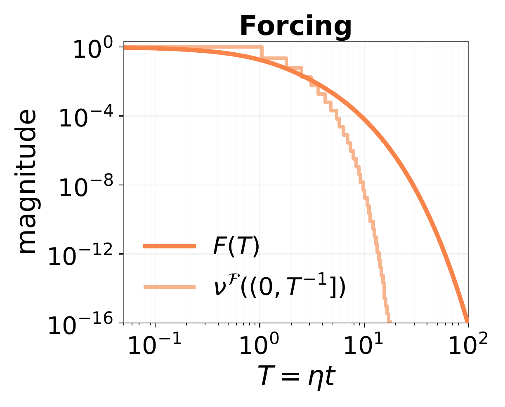
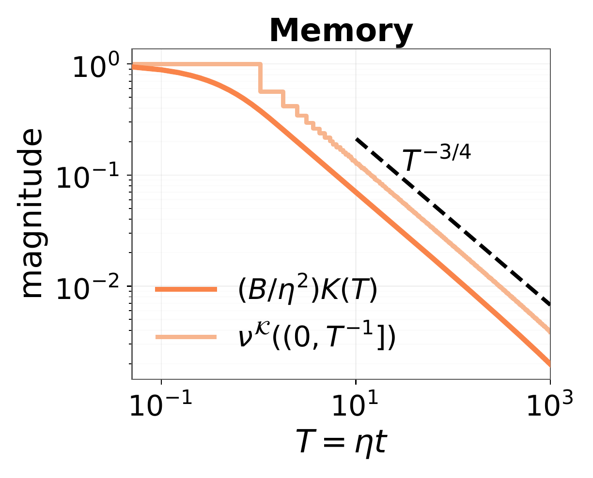
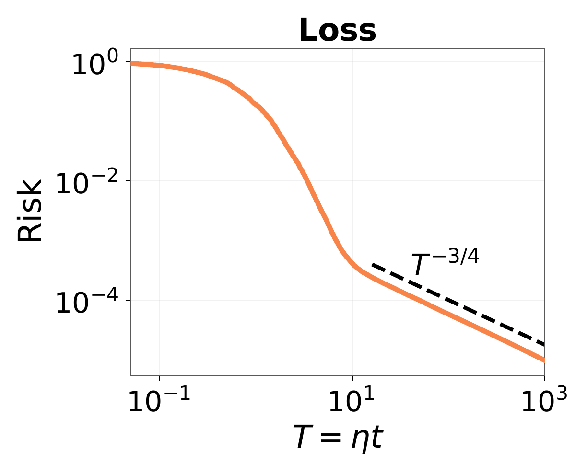
The right panel shows how these two contributions shape actual SGD loss: the early decline largely follows forcing, before entering a power-law regime controlled by the history of sampling noise. The same eigenvalues do not require forcing and memory to follow the same decay law.
A power-law exponent tells us how quickly loss falls, but cannot by itself tell us where the remaining error comes from. Both slowly fading initial error and the lasting effects of training noise can produce power-law tails. Interpreting a learning curve requires separating these contributions, beyond fitting the exponent of their sum.
The equivalences above apply separately to forcing and the single-injection memory response; they do not directly give the exponent of total loss. Recovering the full SGD loss curve also requires accumulating the effects of successive noise injections.
2. How data and training schedules change loss
How noise effects decay and accumulate
In intrinsic time, write \(k(v)\) for the normalized memory response after a delay \(v\): for the constant reference schedule, \(k(T)=(B/\eta^2)K_W(T)\). The noise-injection strength is supplied separately. To isolate the response itself, first consider a reference setting with the same noise strength injected per unit of intrinsic time. If \(k(v)\asymp(1+v)^{-q_{\mathcal K}}\), the accumulated effects of these injections by time \(T\) have order
\[\int_0^T k(v)\,\mathrm dv \asymp \begin{cases} T^{1-q_{\mathcal K}}, & 0<q_{\mathcal K}<1 \quad(\mathrm{LM}),\\ \log T, & q_{\mathcal K}=1,\\ 1, & q_{\mathcal K}>1 \quad(\mathrm{IM}). \end{cases}\]- Long memory (LM): Each response fades, but too slowly for the accumulated response to settle under continuing injections. The previous section’s \(q_{\mathcal K}=3/4\) belongs here: equally strong injections yield an accumulated response that grows as \(T^{1/4}\).
- Integrable memory (IM): Each response fades fast enough for the accumulated response to approach a finite value even as injections continue.
At the boundary \(q_{\mathcal K}=1\), the accumulated response grows logarithmically.
To compare responses across different data and targets, now let the target coefficients decay as a power law too:
\[\lambda_j=j^{-2\alpha}, \qquad |\theta_j^\star|=j^{-\beta}.\]Here \(\lambda_j\) are ordered data-covariance eigenvalues and \(\theta_j^\star\) the corresponding target coefficients. Larger \(\alpha\) steepens the spectrum; larger \(\beta\) reduces target weight in slow directions.
In the LM/IM region with finite target energy, the cumulative spectral-weight criterion from the previous section gives the exponents of target-dependent forcing and the single-injection memory response:
\[q_{\mathcal F}=\frac{2\alpha+2\beta-1}{2\alpha}, \qquad q_{\mathcal K}=2-\frac{1}{2\alpha}.\]When the spectrum decays more slowly, with \(0<\alpha<1/4\), the single-injection memory weights \(\lambda_j^2\), summed over the many small-eigenvalue directions, still grow with model width. Width then affects the memory response itself, as well as when a power law ends. This is finite bulk (FB): a width-independent positive decay exponent alone cannot describe it.
The two phase diagrams below show these regions in response exponents and in spectrum and target parameters.
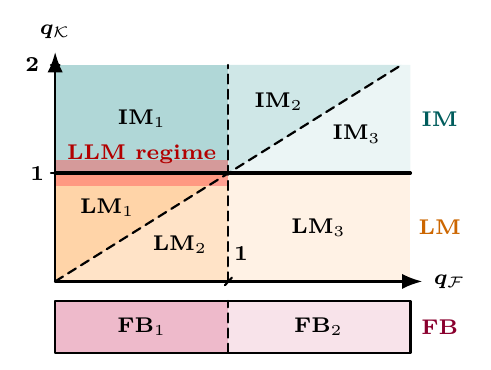
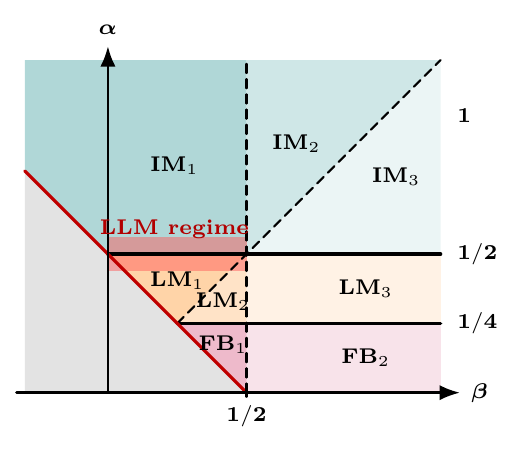
Start with the solid horizontal line in the left panel: it separates LM from IM at \(q_{\mathcal K}=1\), matching the two behaviors of the integral above. In the right panel, this boundary corresponds to a spectral decay rate of \(\alpha=1/2\); FB occupies the separate region \(\alpha<1/4\).
The finer regions compare how quickly target-dependent forcing and memory decay, and whether the former has a finite time integral. In the left panel, the diagonal dashed line marks \(q_{\mathcal F}=q_{\mathcal K}\), and the vertical dashed line marks \(q_{\mathcal F}=1\).
We have now distinguished how the effects of noise fade and accumulate. Actual training also changes the strength of each injection, which is precisely what learning-rate and batch-size schedules can control.
How learning rate and batch size change loss
Changing the strength of noise injection can directly change the shape of a loss curve. Learning-rate decay offers a familiar example: once the learning rate starts to fall, loss may fall faster. In warmup–stable–decay (WSD) training (Hu et al. (2024)), the learning rate stays constant after warmup until a final decay phase. Follow the gray-green curves in the MiniCPM experiment below: their gradual decline gives way to a sharp drop when decay begins. The same pattern appears at several different stages of training.
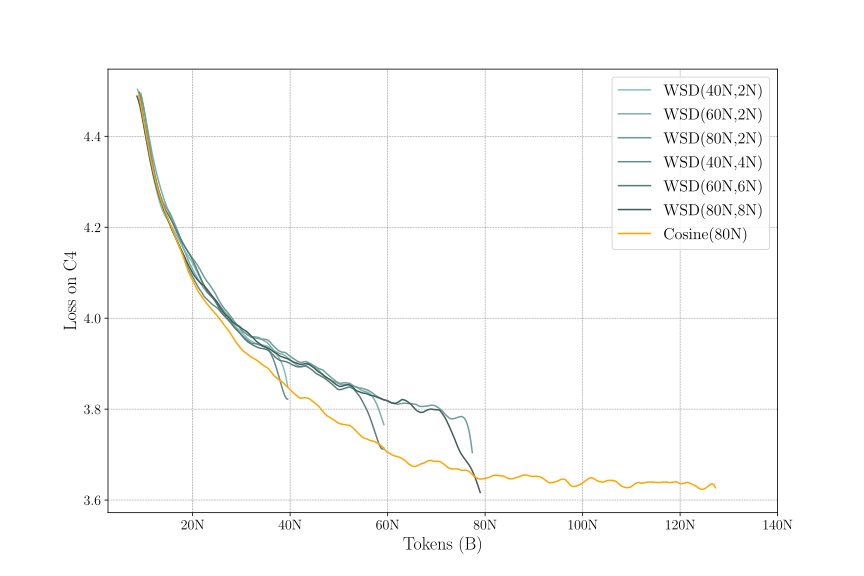
Why does taking smaller updates make loss fall faster? These downward turns look as though the model has begun to learn faster, but reducing the error caused by stochastic updates also lowers loss. If annealing helps, why can’t a more aggressive schedule keep making loss fall faster?
To separate the two effects, start with plain SGD and return to intrinsic time. Lowering the learning rate both shortens the full-gradient update and reduces its noise; increasing batch size reduces noise without shortening that update. The relevant clock and batch-to-learning-rate ratio are
\[T_t=\sum_{s<t}\eta_s, \qquad r_t=\frac{B_t}{\eta_t}.\]An update advances the clock by \(\eta_t\) and injects variance at scale \(\eta_t^2/B_t\). Dividing by the time elapsed in that update gives the noise scale per unit of intrinsic time:
\[\frac{\eta_t^2/B_t}{\eta_t} =\frac{\eta_t}{B_t} =\frac{1}{r_t}.\]\(T_t\) records how far the deterministic learning process described earlier has advanced, while \(1/r_t\) describes the noise scale per unit of progress. Writing \(r(T)\) for the ratio along this clock lets us separate the two effects.
Smaller updates can still make loss fall faster for a while because existing errors fade while new noise keeps adding error. At fixed batch size, lowering the learning rate advances intrinsic time less per update, but also reduces the noise that offsets the decline in loss. If the benefit of noise reduction outweighs the cost of slower progress, loss can drop sharply. This offers one explanation for the WSD curves above, without implying that the model is learning the signal faster.
This separation also appears in the functional scaling law (FSL) of Li et al. (2025): their kernel-regression theory uses intrinsic time to describe learning progress, the learning-rate-to-batch-size ratio to control noise injection, and a forgetting kernel to track its later effects on loss.
This connects increasing batch size with decaying learning rate (Smith et al. (2018)): both reduce noise per unit of intrinsic time. Since earlier noise can still affect loss, we must match the whole ratio path, not just its final value.
The previous section added up individual responses. Now the noise generated at different times varies in strength: we still add up its surviving effects at the endpoint, but weight each injection by its strength at the time. Returning to the power-law random-feature model, under stable LM/IM schedules and accounting for noise feedback, prediction risk obeys the scaling relation
\[R(T)\asymp F(T)+ \int_0^T \frac{F(u)+\sigma^2}{r(u)} \,k(T-u)\,\mathrm du.\]Here \(R\) is prediction risk, and \(F\) is the forcing term in the random-feature model, including the loss floor due to finite width; \(\asymp\) allows multiplicative constants.
For a past time \(u\), \(F(u)+\sigma^2\) represents the noise sources supplied by remaining prediction error and label noise in this scaling relation. Dividing by \(r(u)\) lets the schedule adjust the injection strength per unit of intrinsic time; multiplying by \(k(T-u)\) gives its contribution at the endpoint \(T\). Even without label noise, remaining prediction error still generates minibatch noise, so the integral does not vanish when \(\sigma^2=0\).
Label noise adds loss relative to clean-label SGD under the same schedule. Within the power-law range above, even if later injections become very small, early noise still leaves a tail that decays as \(k(T)\sim T^{-q_{\mathcal K}}\). The decay exponent of the extra loss therefore cannot exceed \(q_{\mathcal K}\). This is the memory ceiling.
More aggressive annealing does not guarantee ever-faster loss decay, for two reasons. First, suppressing new noise does not immediately remove earlier noise: the memory ceiling above limits the power-law exponent of this extra loss in intrinsic time, not the short-term rate of decline per token in the figure. Second, lowering the learning rate more aggressively also slows the clock. At fixed batch size and token budget, less intrinsic time accumulates, leaving less progress in both signal learning and the decay of earlier errors. Annealing can therefore reduce new errors, but it cannot bypass the decay of old ones; pushing it too far can slow that decay down.
When both the individual memory response and ratio growth follow power laws, comparing the extra loss with the excess loss of clean-label SGD gives three outcomes:
- Destroy: the extra loss does not decay as a positive power.
- Change: the extra loss decays more slowly than the excess loss of clean-label SGD and sets a new exponent.
- Preserve: the extra loss decays at least as fast, leaving the clean-label SGD exponent unchanged.
The diagram compares the clean-label SGD excess-loss exponent \(q_0\), describing decay above its floor as \(T^{-q_0}\), with the ratio-growth exponent \(\vartheta\), defined by \(r(T)\sim T^\vartheta\). Clean-label SGD still includes minibatch noise, so \(q_0\) generally differs from the forcing exponent \(q_{\mathcal F}\).
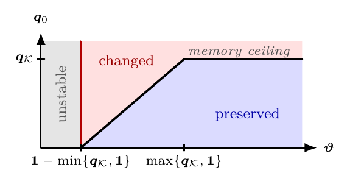
Fix \(q_0\) and move horizontally to the right, increasing \(\vartheta\). If \(q_0<q_{\mathcal K}\), we eventually cross from change into preserve: the extra loss now decays at least as fast as the excess loss of clean-label SGD. If \(q_0>q_{\mathcal K}\), our horizontal line stays above the memory ceiling, no matter how far right we go. The extra loss has a decay exponent capped at \(q_{\mathcal K}\), so more aggressive noise suppression cannot recover the clean-label SGD exponent.
3. Tests in LLM training
The analysis above separated two effects of a schedule: intrinsic time records how far learning has progressed, and \(r(T)\) controls noise injection along the way. Are these quantities still useful for an LLM whose representations keep changing? We first compare different implementations of the same ratio path, then test whether changing that path lets us predict a new loss curve.
Lowering learning rate versus increasing batch size
We first compare two implementations of the same ratio path: we lower the learning rate at fixed batch size in one run and increase the batch size at fixed learning rate in another. We match their clocks and ratio paths.
We made this comparison with a 300M LLM trained using plain SGD on 6.5B OpenWebText tokens. All runs share the first 80% of the token budget, then branch from the same checkpoint for the remaining 20%. In the fixed-batch runs, WSD lowers the learning rate gradually over that tail, while 8-1-1 uses two lower-rate stages of 10% each. If intrinsic time and the ratio path capture the main schedule effects, each learning-rate/batch-size pair should follow nearly the same loss curve.
Return to the opening animation and follow the two blue WSD curves: they are separated when plotted against optimizer step, but nearly coincide when plotted against intrinsic time. The two orange 8-1-1 curves show the same change. The two implementations need different numbers of updates to process the same data, so comparing them directly by step misaligns their training progress.
Blue and orange do not collapse onto a single curve because WSD and 8-1-1 follow different \(r(T)\) paths. In these runs, the comparison shows that changing either learning rate or batch size can implement the same path and produce very similar loss responses.
Fit 8-1-1, predict WSD
Different implementations of the same path can align. The next question concerns differences between paths: can a response fitted to the two learning-rate drops in 8-1-1 predict loss under WSD’s gradual learning-rate decay?
For LLM validation loss, we fit the component functions rather than use the random-feature model’s exact quantities. Our starting point is the practical seven-parameter FSL of Li et al. (2025), which they fitted on 8-1-1 to predict unseen WSD and cosine curves. We follow that fit-then-transfer protocol and adapt the parameterization: their fixed-batch surrogate describes the response to learning-rate drops, whereas ours weights noise injections directly by the inverse batch-to-learning-rate ratio. This gives a forcing–memory surrogate that also accommodates changing batch size at fixed learning rate:
\[\widehat L(T) =L_\infty+A_{\mathcal F}(1+T)^{-q_{\mathcal F}} +\int_0^T \frac{A_0+A_1(1+u)^{-q_{\mathcal F}}}{r(u)} \bigl(1+c_{\mathcal K}(T-u)\bigr)^{-q_{\mathcal K}} \,\mathrm du.\]The formula follows the earlier structure, adding a baseline to the surviving effects of past noise injections:
- \(L_\infty+A_{\mathcal F}(1+T)^{-q_{\mathcal F}}\) describes how the baseline falls toward its floor.
- \(A_0+A_1(1+u)^{-q_{\mathcal F}}\) splits the noise source into a part that does not decline with time and a part that weakens during training. Dividing by \(r(u)\) gives the injection strength after adjustment by the schedule.
- \(\bigl(1+c_{\mathcal K}(T-u)\bigr)^{-q_{\mathcal K}}\) describes how much of an injection at time \(u\) survives until \(T\). Here \(c_{\mathcal K}\) sets the time scale of the decay, while \(q_{\mathcal K}\) controls its long-time rate.
These components are fitted from loss curves. The baseline is not a separately measured noise-free trajectory, and the source amplitudes \(A_0,A_1\) are not fixed by \(L_\infty,A_{\mathcal F}\).
The opening animation uses a freely fitted \(q_{\mathcal K}\). For the comparison below, we set \(q_{\mathcal K}=1\) as a simplification because the free fits shown below give memory exponents close to one across datasets and model sizes. We fit the other six parameters to measured validation loss from the fixed-batch 8-1-1 run. Then we freeze every parameter and replace only the ratio path with WSD’s. No WSD loss after the branch point enters the fit.
In the left panel below, the surrogate fits the two stepwise drops of 8-1-1. Replacing the ratio path with WSD’s produces the gradually accelerating decline in the middle panel, following the measured loss. Before the dotted line, the runs share the same training history; the WSD tail after that line is the test of prediction across schedules.
The RMSE is \(1.31\times10^{-3}\) nats/token for the 8-1-1 fit. With all parameters fixed, the prediction RMSE on the WSD tail after the branch point is \(1.58\times10^{-3}\).
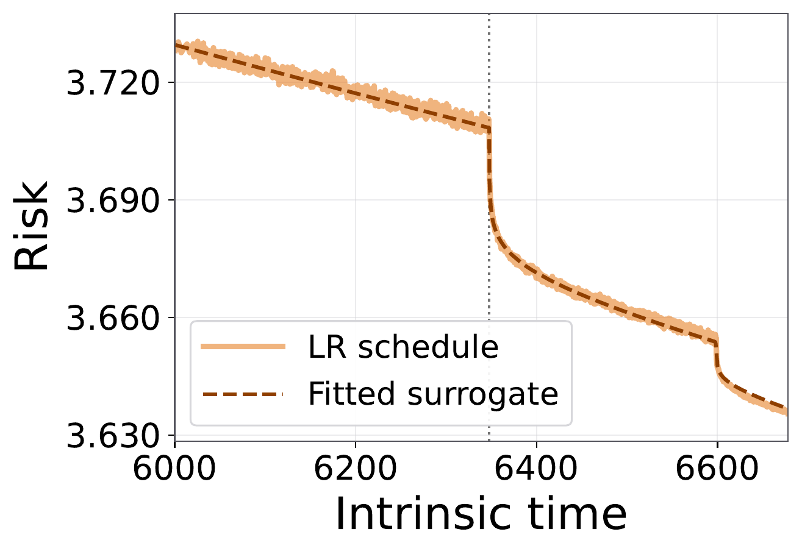
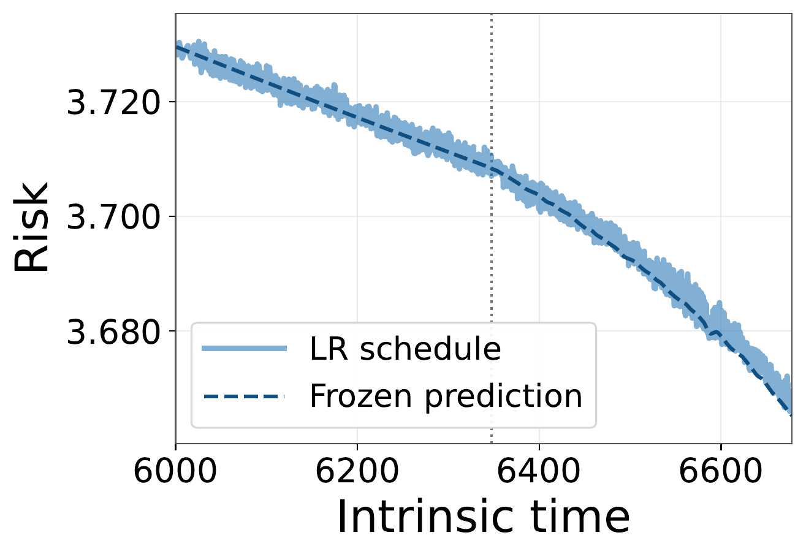
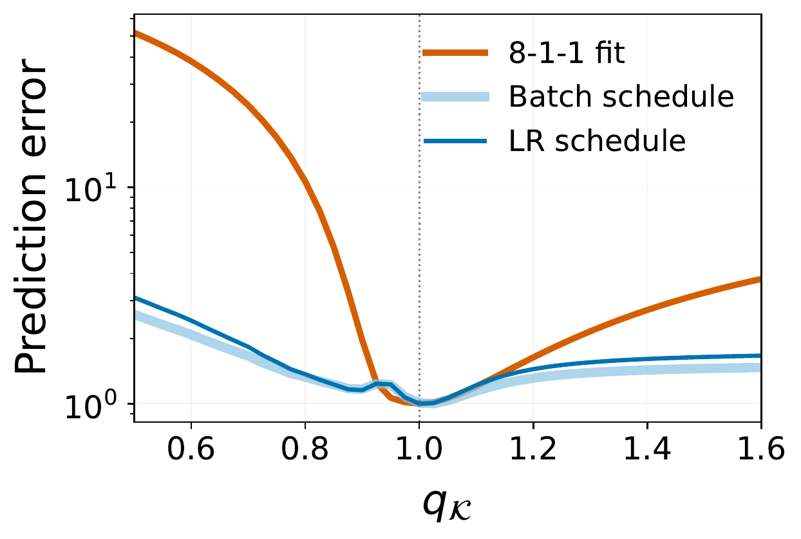
The right panel further checks how sensitive this prediction is to the choice of memory exponent. The normalized prediction error is smallest when \(q_{\mathcal K}\) is close to one. This compares predictive performance across exponents; it does not independently measure the true memory exponent.
A learning-curve model should earn our confidence by predicting what happens when training changes.
Experimental setup and surrogate fitting details
Training and matching. The preliminary 30M experiment continued one well-trained plain-SGD checkpoint under eleven ratio paths, all ending at the same intrinsic time. In the 300M comparison, each learning-rate/batch-size pair matches data, intrinsic-time increments, and \(B/\eta\) over groups of updates.
Surrogate parameters. The seven parameters are the loss floor \(L_\infty\), forcing amplitude \(A_{\mathcal F}\), source amplitudes \(A_0,A_1\), memory time-scale parameter \(c_{\mathcal K}\), and exponents \(q_{\mathcal F},q_{\mathcal K}\). The approximation separates the effective response as \(K(n,s)\approx J(T_s)k(T_n-T_s)\), where \(J\) is the source amplitude and \(k\) the propagation kernel.
With \(q_{\mathcal K}=1\), the other six parameters are fitted only to original, unsmoothed 8-1-1 measurements; no WSD loss after the branch point enters the fit. The exponent scan repeats this procedure for each fixed exponent and evaluates the resulting WSD prediction error.
Hybrid Muon. A short calibration selected a different clock and ratio for those runs: \(\widetilde T=\sum_t\eta_t^2\) and \(\widetilde r=B/\eta^2\). Those calibrated quantities brought its paired curves together as well.
The fitted memory exponent is near one
The previous section compared WSD predictions at different memory exponents. Here we make a different check: using only the 8-1-1 curves, let all seven parameters vary without specifying \(q_{\mathcal K}\) in advance. Across datasets and model sizes, the fitted values remain close to one:
| Dataset and setting | \(q_{\mathcal K}\) | \(q_{\mathcal F}\) |
|---|---|---|
| OpenWebText, 124M, 2.5B tokens | 1.017 | 0.374 |
| FineWeb sample-10BT subset, 124M, 2.5B tokens | 0.952 | 0.405 |
| peS2o V2 s2orc full text, 124M, 2.5B tokens | 0.995 | 0.365 |
| OpenWebText, 300M, 6.5B tokens | 0.989 | 0.291 |
When \(q_{\mathcal K}=1\), the surrogate’s kernel decays as \(1/(T-u)\) over sufficiently long time intervals. This is the boundary described earlier between a finite cumulative response and one that keeps growing; at the boundary, the accumulated response to equal-strength injections grows logarithmically. These fitted response exponents therefore sit close to the theoretical LM/IM boundary.
One possible explanation is that different text corpora share statistical structure, giving the model’s noise responses similar decay patterns. Another is that representation learning and optimization gradually shape similar effective spectra, bringing the memory exponent close to one. In future work, we will test these conjectures and study how data and training dynamics together affect \(q_{\mathcal K}\) in LLMs, and why it is close to one in these experiments.
Further reading
- Empirical scaling laws: Kaplan et al. (2020), Scaling Laws for Neural Language Models. How language-model loss depends on model size, data, and compute.
- Spectral models: Paquette et al. (2024), 4+3 Phases of Compute-Optimal Neural Scaling Laws. A solvable model connecting data and target structure to compute-optimal regimes.
- Learning rate and batch size: Smith et al. (2018), Don’t Decay the Learning Rate, Increase the Batch Size. Experiments replacing learning-rate decay with batch-size growth.
- Predicting full trajectories: Li et al. (2025), Functional Scaling Laws in Kernel Regression: Loss Dynamics and Learning Rate Schedules. Intrinsic-time theory and surrogate prediction of LLM learning curves.
- Optimal schedules: Bordelon and Mori (2026), Theory of Optimal Learning Rate Schedules and Scaling Laws for a Random Feature Model. How optimal annealing depends on the spectrum and task.
This post is based on From Spectra to Joint Schedules in LLM Pre-training: 3+3(+2) Scaling-Law Regimes (Wang et al. (2026)), joint work by Yichen Wang, Fanghui Liu, and Yudong Chen.